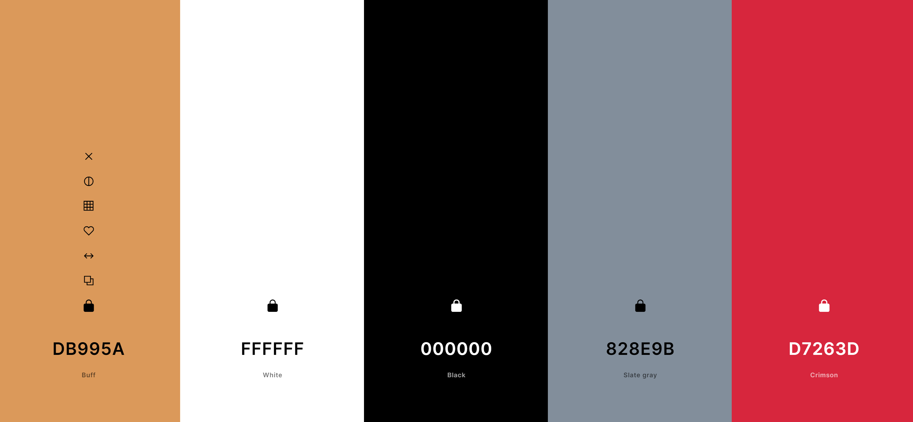

Site name:
Tatooine Chamber of CommerceSite Purpose:
The Tatooine Chamber of Commerce stands as a guiding star amidst the twin suns,
steering the economic
destiny of our desert world. Much like the resourcefulness needed to thrive in our arid environment, we
strive to empower businesses through a spectrum of member services, advance economic and communal
progress,
and advocate for policies that harmonize prosperity with the preservation of Tatooine's unique heritage.
1. This site will help natives and visitors of Tatooine get information about local businesses.
2. Aside from just informing the user, the site will also help the user become more interested in local
businesses.
Scenarios
- What businesses are hiring?
- What businesses are in the area?
- How can I learn about events and news regarding businesses in the area?
Colors
Working left to right:
- Will be the main color of the page, similar to how it is on this page.
- Will be used for the main section
- Will be used for text
- Will be used for the footer and header.
- May be used for highlights.